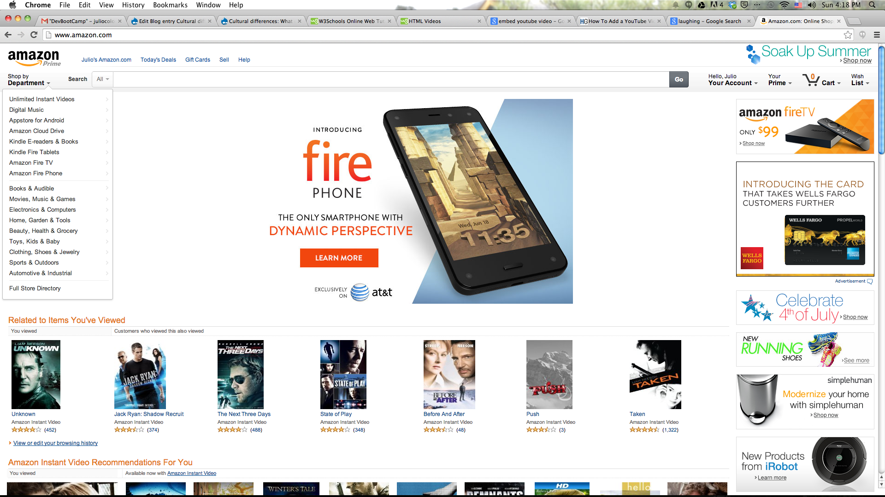
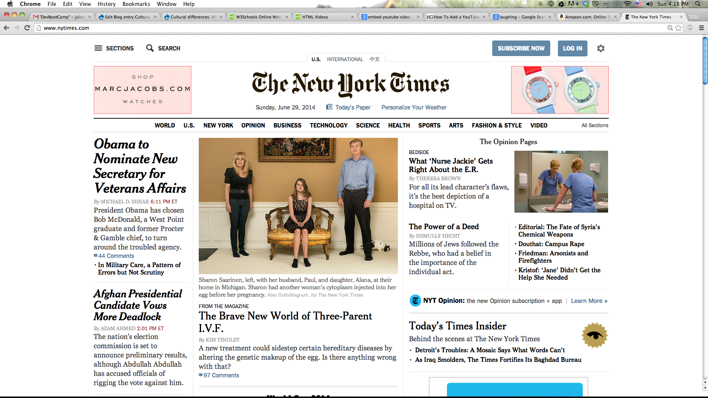

Analyzing the 3 sites in terms of user experience and design.
apple.com
I love the original design filosophy of Steve Jobs: simplicity, focus, black & white. It seems to me that the current design of Apple's website is separating itself from that original filosophy: each day seems more crowded and distracting. The mobile-style-for-all-devices approach they have adopted makes uncomfortable the user experience of the visitor that uses desktop computer.

amazon.com
Amazon means user experience. The visual design of the website is elegant and correct, but the functionality included in order to interact with the individual preferences of the user is amazing.

nyt.com
I tend to like the design and functionality of the New York Times' website. I find that the visual and functional elements of this site are well chosen considering its purpose